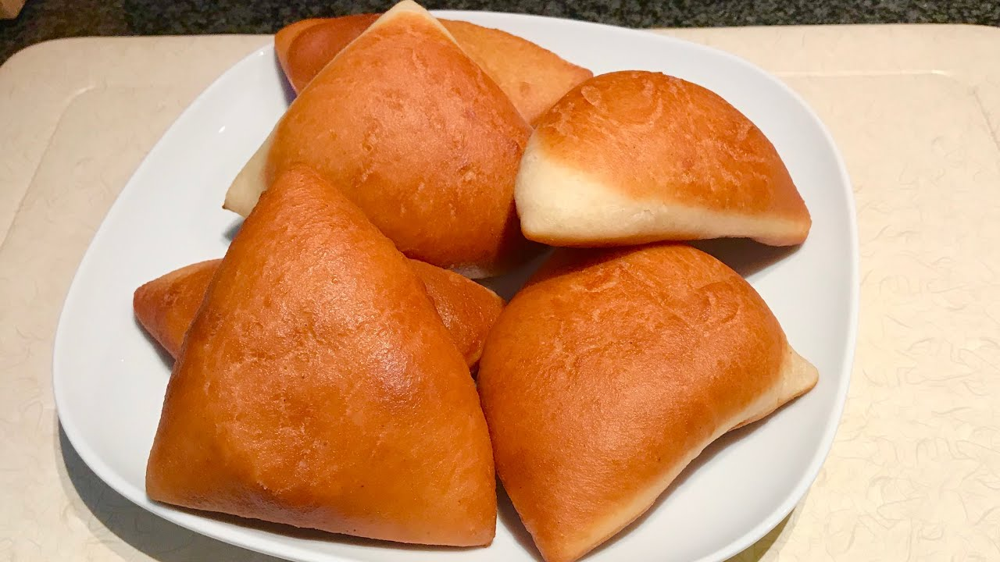

How to make Mahamri

Description
Mahamri is a meal originating from the East Coast of Africa, Mombasa
and Dar es Salaam. This meal popularized due to its sweetness and soft
nature. Mahamri is mostly eaten as a breakfast meal
Ingredients
These are the Ingredients needed to make Mahamri
- 3 cups of flour
- 1 table spoon of dry yeast
- 8 table spoons of sugar
- half a table spoon of salt
- 1 table spoon of margarine
- 1 cup of hot water
- 1/2 cup of butter milk
- Cardamon
- Desiccated coconut
- Cooking oil
Preparation steps
These are the steps on how to prepare Mahamri
- Mix flour and margarine till its crumblike
- Add all other ingredients except the water, butter milk and cooking oil
then mix perfectly
- Mix the hot water with the cold butter milk and make sure it is lukewarm
before you pour it into the mixture this prevents activation of the yeast.
- Mix all of the well and knead till it is soft and firm
- Cover the knead and let it proof for an hour
- roll out the knead and cut into desired small shapes
- Heat up a pan of oil and deep the cut rolls in it to cook till they
turn to a golden brown color
- Serve with tea
Enjoy your Mahamri Breakfast